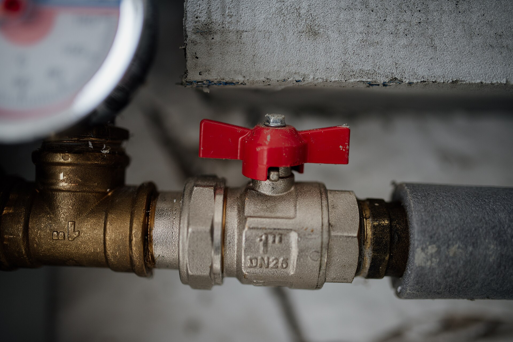
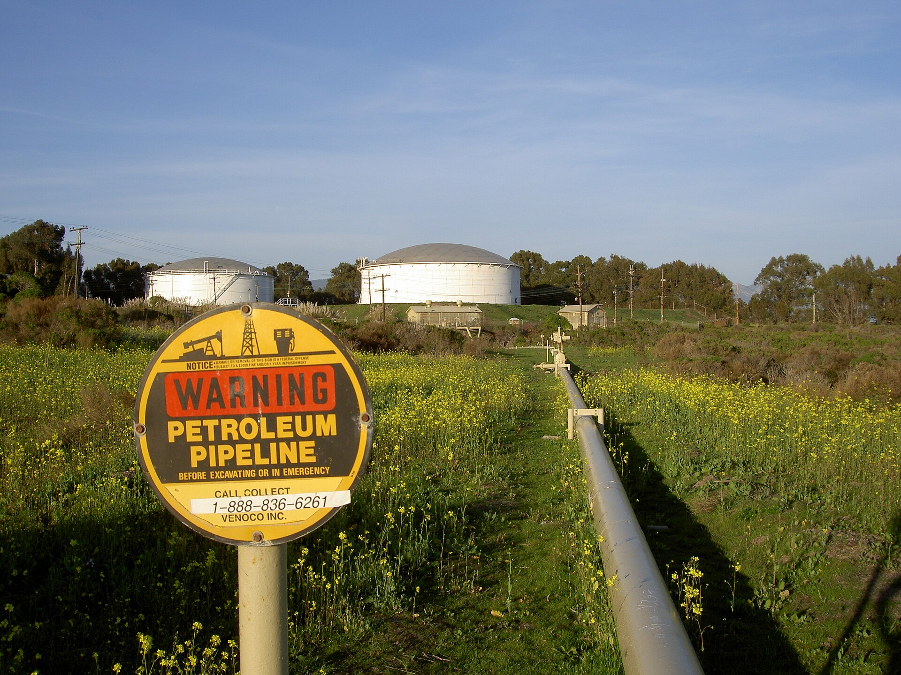
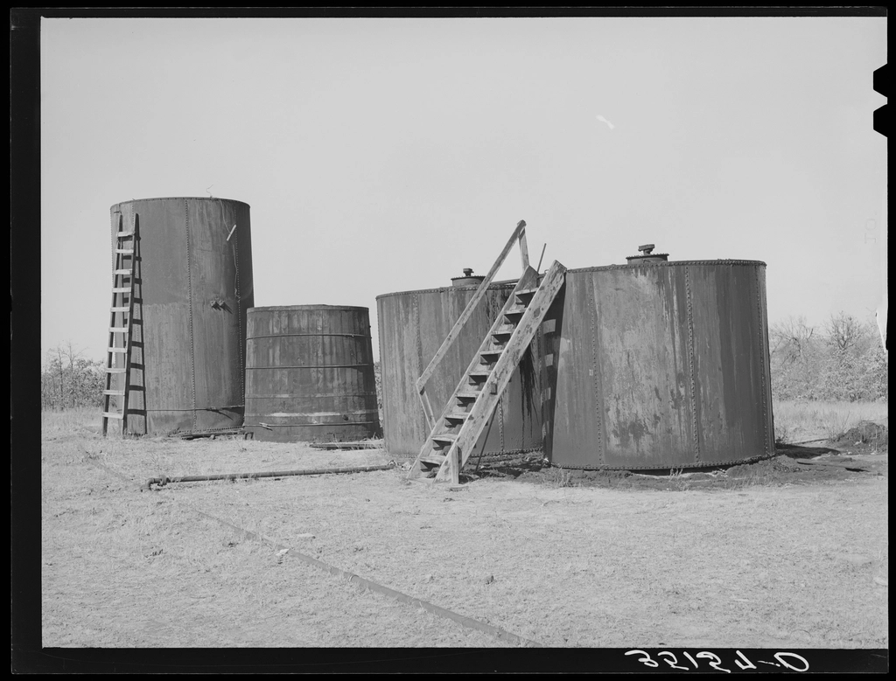
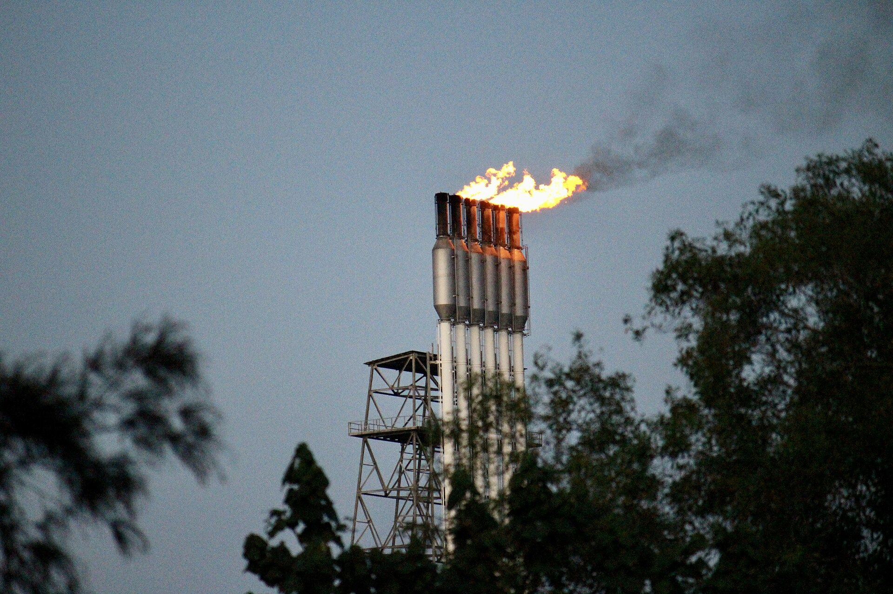

Fault
Something broke: a leak, a frozen sensor, a dead pump, a sticking valve. The readings are wrong, but they still obey the tank's physics.
Send a technician.
python "FAULT OR ATTACK.py" --web (menu option 7) to create
web/data.js, then reload this page.
A detector for oil and gas storage tanks that tells a broken part from a cyberattack, and shows you how it decided.


Short on time? See it in one minute.
When a tank's level goes wrong, the operator must decide fast: is something broken, or is someone attacking? A wrong answer sends the wrong help. A repair technician cannot stop a hacker, and a cybersecurity team cannot fix a worn-out pump.

Something broke: a leak, a frozen sensor, a dead pump, a sticking valve. The readings are wrong, but they still obey the tank's physics.
Send a technician.

Someone broke in, often from far away over the network: fake readings, a replayed recording, forged commands to the pump. An attacker has to fake the physics, and faking it leaves traces.
Switch to manual, cut the plant off from outside networks, and call the cybersecurity team.
The detector's answer decides who gets the call. A fault goes to maintenance. An attack is a cyber incident, and in Brunei it has a named place to go.
Hotline: (+673) 245 8001
Second line: (+673) 717 0766
Email: cert@brucert.org.bn
Raise a maintenance work order and send a technician. No cyber report is needed. If the fault caused a safety incident, that goes to the safety regulators instead: SHENA for workplace safety, and the Petroleum Authority for oil and gas operations.
Contact details are from brucert.org.bn and csb.gov.bn, checked on 11 November 2026. The reporting duty is in section 16 of the Cybersecurity Order, 2023 (now the Cybersecurity Act, Chapter 272). This is a student project, not legal advice: check the official sites before relying on it.
A one-page plan for a Brunei oil and gas control room. Safety comes first: the overfill trip and safety system act on their own and are never switched off to keep production going. After that, stop only what the evidence requires. Colonial Pipeline stopped in about 15 minutes but took about 5 days to restart.
| Detector says | What the control room does | Within |
|---|---|---|
| FAULT, clear cause | Maintenance as normal: a work order and a technician. | Normal |
| FAULT soon after a new device, a foreign write or an office IT incident | Treat it as an attack until it is ruled out. The detector already does this. | Immediately |
| ATTACK | Make the process safe and call the incident team. If hard-wired gauges and manual control work, isolate the control network and run critical parts by hand; if not, a controlled shutdown. Keep the evidence, then report to BruCERT and, for critical sites, the Commissioner. | Immediately |
| IT: office IT hit, plant fine | Keep running. Cut the link between office IT and the control network and keep watching. Any later FAULT counts as an attack. | Within 1 minute of the IT alert |
| PHYSICAL | Make the process safe and send site security with a technician. Theft or sabotage: the police. Safety or spill: SHENA and the Petroleum Authority. A safety trip bypassed with no work order is reported under Directive No. 01/2021. | Immediately |
| UNKNOWN | Check the real level in the field with an independent gauge; escalate if it is still unexplained. | 15 minutes |
Restoring after an attack is an engineering check, not "wipe and reinstall". In order: network and security equipment, OT servers and accounts, engineering PC and screens from clean images, controller programs checked against signed backups, the detector and historian, and the link to office IT last. Report once: one incident record, the same facts to every body that needs them. Practise once a year with at least two set objectives (our recommendation).
Full playbook, with sources: Brunei OT Incident Playbook (in the project files, docs/). A student proposal, not legal advice.
right calls on the simple plant
right calls on the realistic plant
real attacks caught on a real testbed
Each tank is filled to its score.
The tank feeds four pipes in a row, with a flow meter between each one. When a pipe leaks, less water comes out of it than went in. Find that pipe. But watch out: sometimes no pipe leaks and a meter is lying.
Press Start a new leak. Water flows from the tank, left to right, through pipes A to D.
Leaks keep popping up for 30 seconds, faster and faster. Fix each red pipe by clicking its box, or press its key: 1 to 8. Fast fixes score double, and every 5 in a row earns a bonus. A wrong box bursts a good pipe. Leaks drain the tank, and if it runs dry the game ends.
Find the leaking pipe in Level 1 to unlock this level.
Now the tank itself has a problem. Was it something breaking, or someone attacking? Play a mystery round and guess which problem it is, or pick one from the lists to watch it.
Easy: 3 answers to pick from, with hints.
Guessing would score 50%. The two problems marked "smart" were added after the detector was built, to test it fairly.
"Still checking" means the detector asked a person to look instead of guessing.
The was recorded on a real boiler testbed in South Korea, with real attacks. We learned what "normal" looks like from one normal day, then watched two days with attacks, without peeking.
The plant, its networks and the detector, on one map. Follow a story, take the quiz, or click any box.
Swipe sideways to see the whole map.
Every upgrade does one of three things: says where an attack came in, adds tanks so causes leave different patterns, or adds witnesses an attacker on the network cannot reach. The numbers rank them by value for effort.
From our research report "Control system topologies for detection" (November 2026). The topology facts were mostly checked against sources; the claims about how each upgrade improves the detector are our own design reasoning, and the ranking is a judgement.